- Módulo: Administración de Sistemas Operativos
- Título del trabajo Tareas programadas
- Componentes del grupo: Cinthia A. Vargas Jiménez
- Curso Académico: 2014/2015
- Fecha de entrega: Enero 2015
1. APAGADO DEL EQUIPO
Inicio , y en el cuadro de búsqueda : taskschd.msc
Aparecerá la siguiente ventana , donde haremos clic en "programador de tareas"
En el menú seleccionamos Acción->Crear tarea...
Escribimos un nombre a la tarea y una descripción
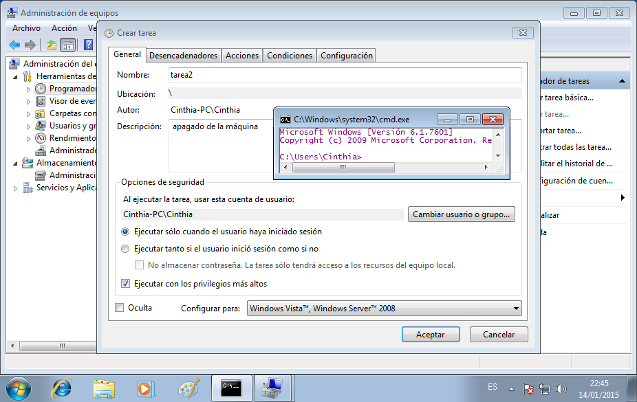
Indicaremos la periodicidad que deseamos
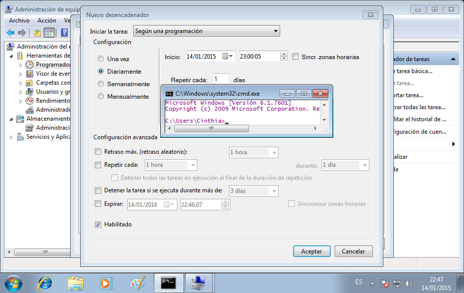
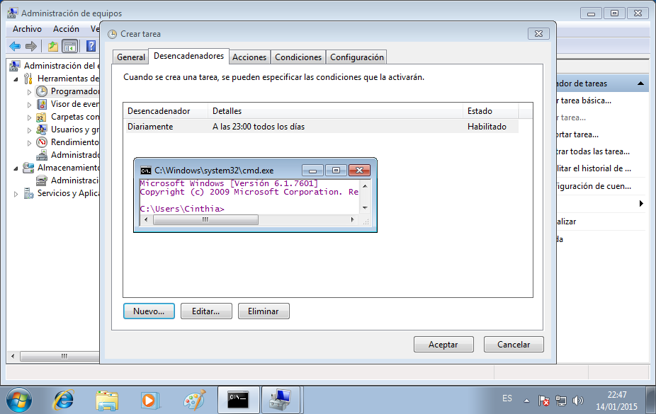
Seleccionamos la pestaña Acciones donde indicaremos que deseamos que haga nuestra tarea, en mi caso, apagar el ordenador
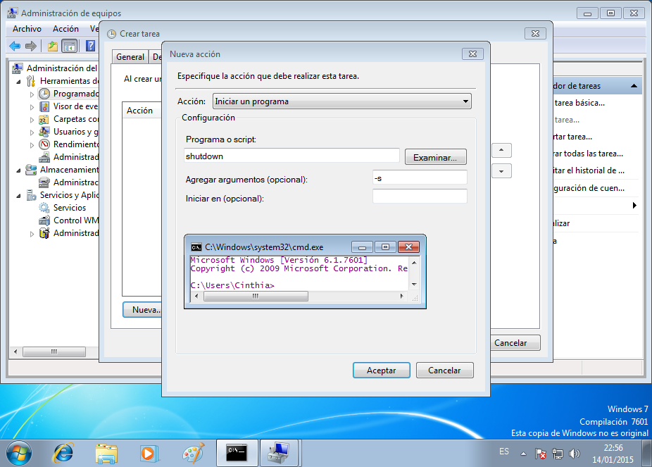
Una vez creada la tarea, seleccionamos "Biblioteca del Programadores de tareas" para visualizar la tarea
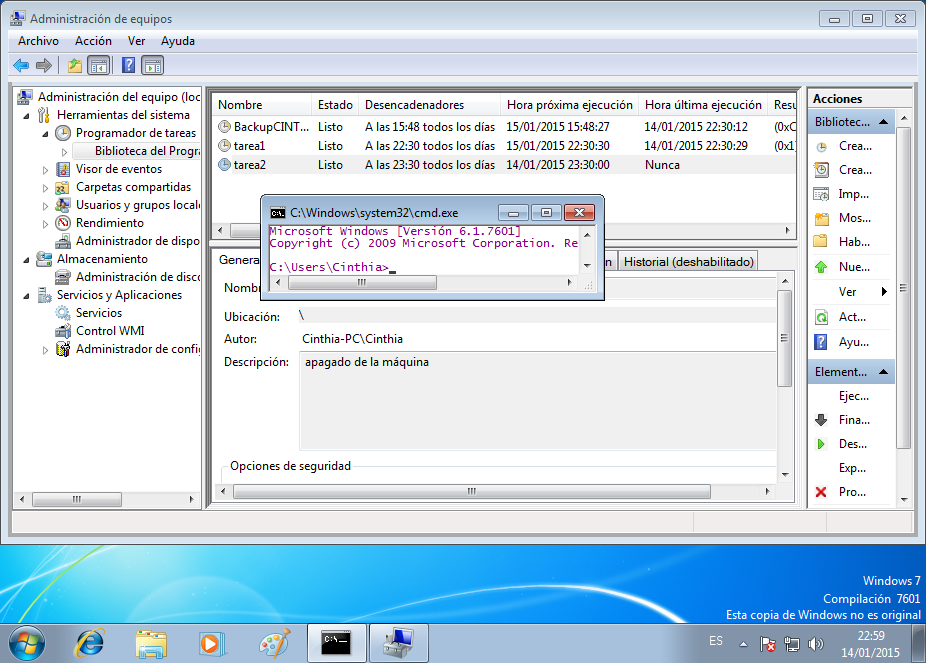
Según se muestra en la captura , el ordenador se apagará
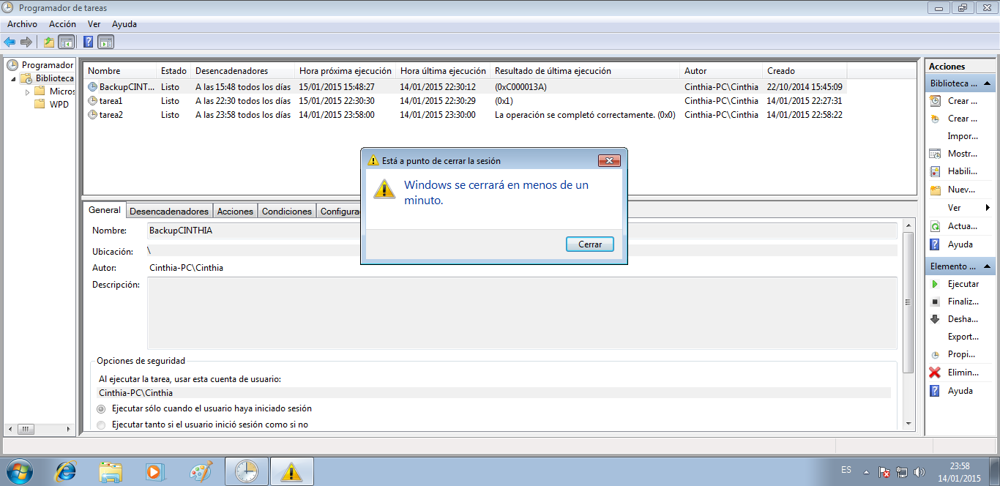
Observamos que la tarea se completó correctamente
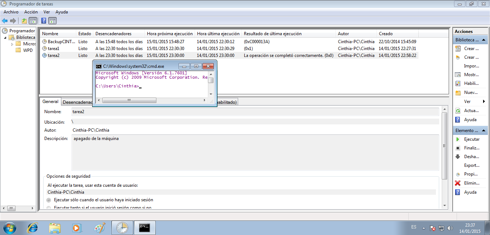
2. MOSTRAR MENSAJE
Inicio , y en el cuadro de búsqueda : taskschd.msc
Aparecerá la siguiente ventana , donde haremos clic en "programador de tareas"
En el menú seleccionamos Acción->Crear tarea básica
Seleccionamos el inicio de la tarea , en la acción seleccionamos la opción de "Mostrar mensaje"
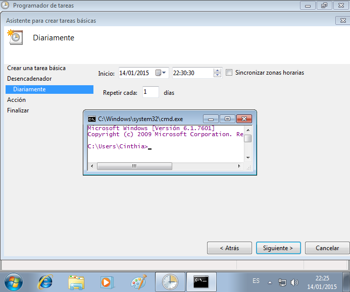
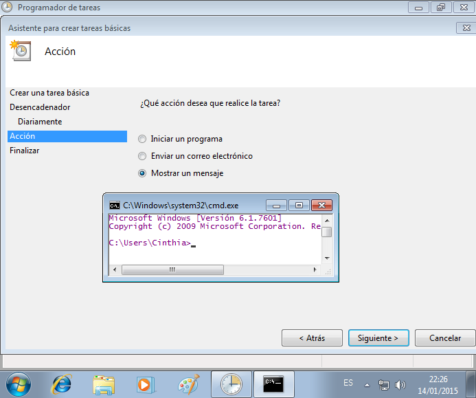
En el siguiente paso , escribimos lo que deseamos que muestre el mensaje
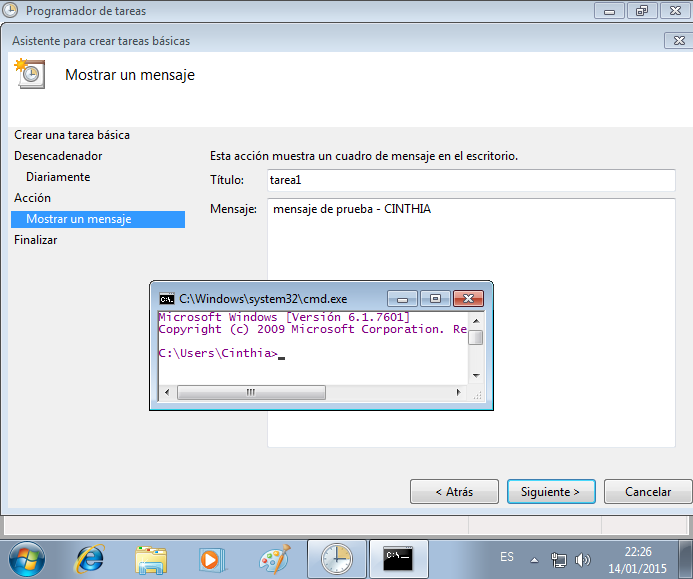
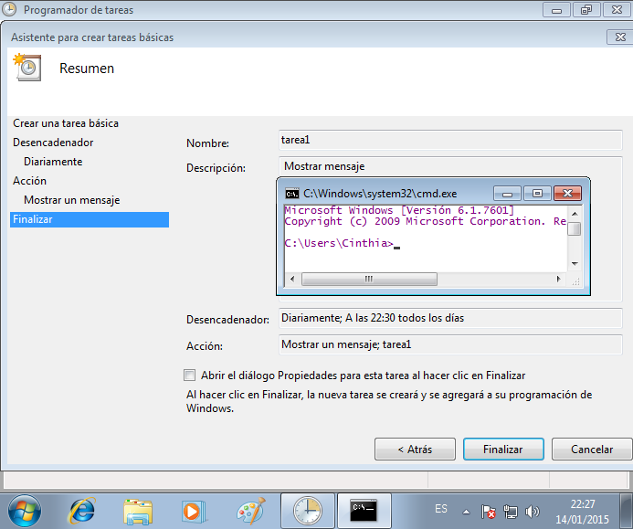
Observamos que se ejecutó correctamente
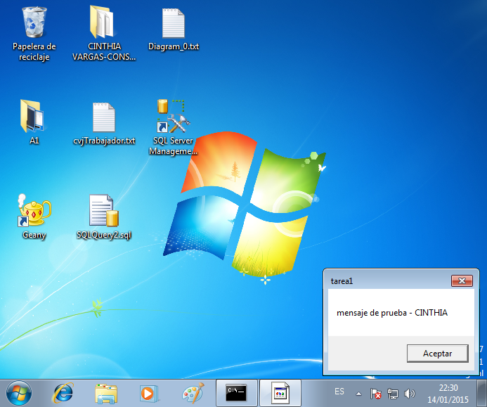
2. ABRIR UN PROGRAMA
En el menú seleccionamos Acción->Crear tarea básica
Especificamos la acción , en mi caso , es ejecutar GEANY
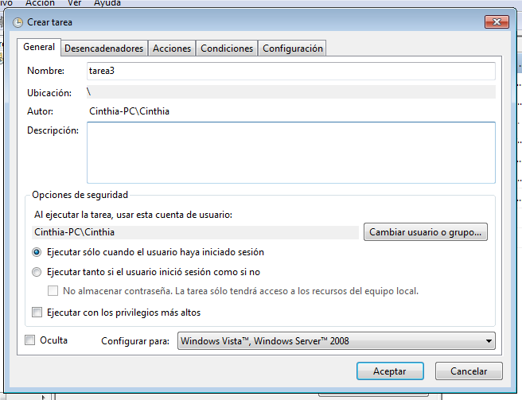
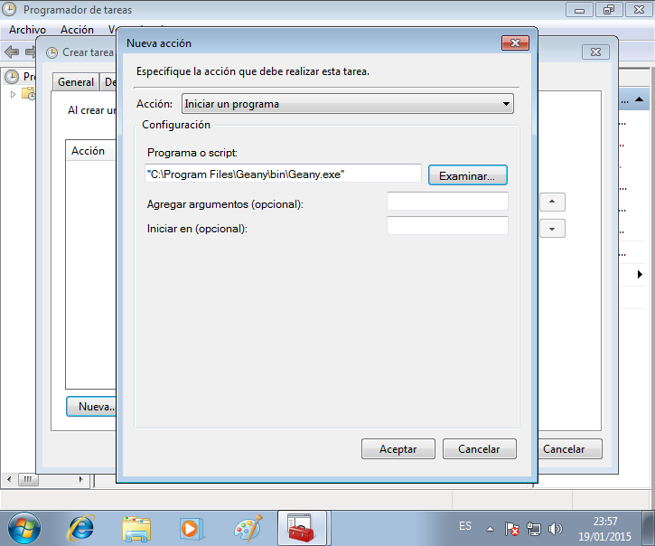
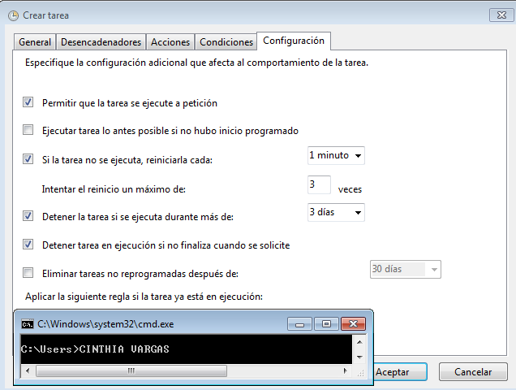
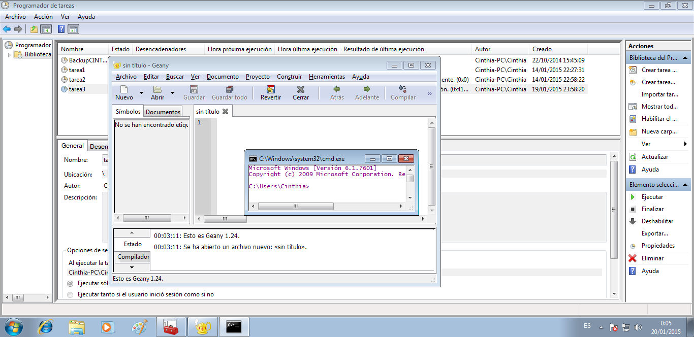
1. MOSTRAR MENSAJE
Creamos el script con el mensaje que deseamos mostrar
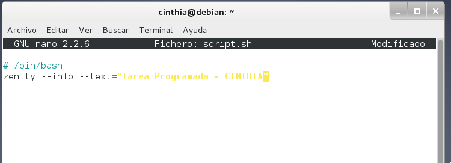
El script creado anteriormente se guardará en Escritorio , y ejecutamos crontab -e, luego indicaremos la periodicidad en la que se ejecutará y escribiremos la ruta donde tenemos al script
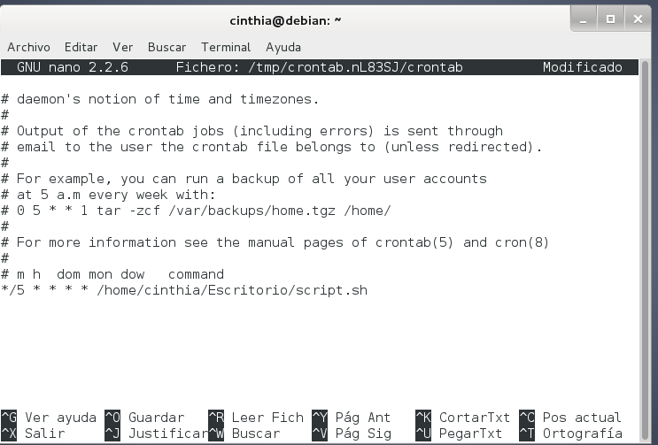
Resultado
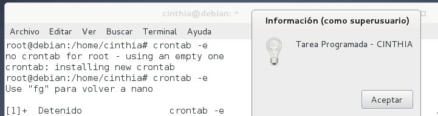
2. APAGAR EQUIPO
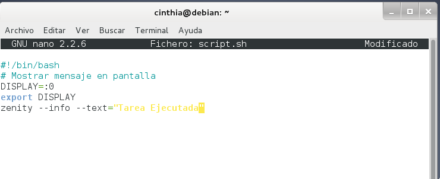
Le aplicamos los permisos al script
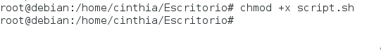
Indicamos la periodicidad en la que se efectuará , y su ruta
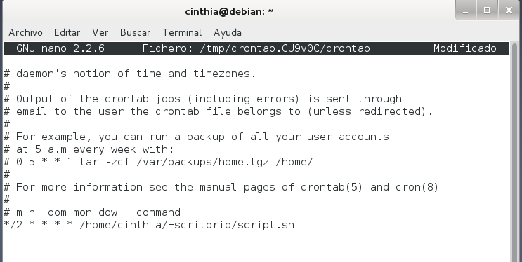
Resultado
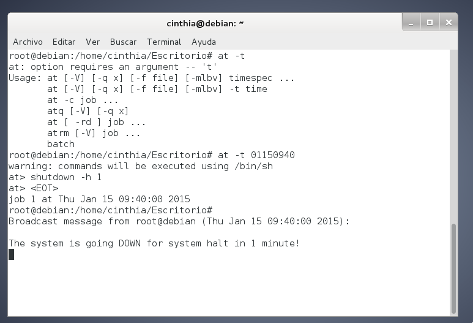